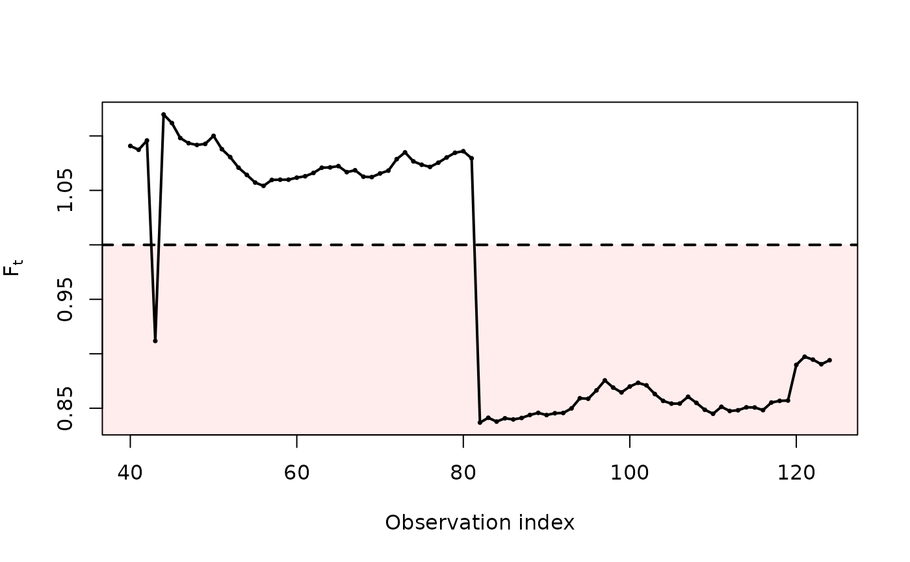

Computes the monitoring index \(F_t\) that combines the conformal normal curvature diagnostic with the finite upper endpoint of the fitted model. The index compares the support the model would infer without the observation flagged by the curvature against the largest response actually observed.
Usage
evbs_monitor(X, y, burn = 40, use = c("curvature", "max"))Value
A data frame with the time index, the running maximum, the flagged
observation, the fitted shape parameter and the index F.
Details
Let \(j^{*}(t)\) be the observation with the largest aggregate contribution
when the model is fitted to the first \(t\) records, and \(y_{\max}(t)\)
the largest response up to \(t\). Then
$$F_t = \hat T^{*}_{(-j^{*}(t))}(t) / y_{\max}(t),$$
where \(\hat T^{*}_{(-j^{*})}\) is the endpoint estimated after deleting the
flagged observation, evaluated at the covariate value of the observation
that attains \(y_{\max}(t)\), so that numerator and denominator refer to
the same covariate value. The flagged observation is the one with the
largest mean aggregate contribution, colMeans(cnc_diagnostics(fit)$Bj).
See gev_monitor for the same index under the GEV regression.
Values below one indicate that the model fitted without the flagged observation assigns probability zero to a value that was in fact observed: the endpoint is then determined by a single record and should not be quoted as a design value. The control limit at one follows from the definition and is not a tuning constant.
Deleting the sample maximum instead of the flagged observation (use =
"max") lowers the endpoint essentially by construction and produces an index
that signals almost everywhere; it is provided for comparison only.
Examples
# \donttest{
data(itajai)
ct <- evbs_monitor(cbind(1, itajai$pressure), itajai$wind, burn = 40)
ct[ct$F < 1, ] # instants with an alarm
#> t ymax flagged gama endpoint F
#> 4 43 21.7 43 -0.3025987 19.78611 0.9118021
#> 43 82 33.9 82 -0.1413614 28.36888 0.8368401
#> 44 83 33.9 82 -0.1359969 28.51878 0.8412620
#> 45 84 33.9 82 -0.1376183 28.39953 0.8377442
#> 46 85 33.9 82 -0.1362815 28.50247 0.8407808
#> 47 86 33.9 82 -0.1366133 28.46668 0.8397250
#> 48 87 33.9 82 -0.1440524 28.51222 0.8410684
#> 49 88 33.9 82 -0.1381553 28.60621 0.8438410
#> 50 89 33.9 82 -0.1367720 28.67174 0.8457740
#> 51 90 33.9 82 -0.1418946 28.60366 0.8437658
#> 52 91 33.9 82 -0.1407280 28.65988 0.8454242
#> 53 92 33.9 82 -0.1398052 28.66778 0.8456573
#> 54 93 33.9 82 -0.1367340 28.81159 0.8498993
#> 55 94 33.9 82 -0.1348825 29.12595 0.8591727
#> 56 95 33.9 82 -0.1352087 29.11071 0.8587231
#> 57 96 33.9 82 -0.1321758 29.37175 0.8664232
#> 58 97 33.9 82 -0.1298067 29.68255 0.8755915
#> 59 98 33.9 82 -0.1322683 29.45879 0.8689907
#> 60 99 33.9 82 -0.1338166 29.30803 0.8645435
#> 61 100 33.9 82 -0.1290087 29.49044 0.8699246
#> 62 101 33.9 82 -0.1266255 29.60665 0.8733524
#> 63 102 33.9 82 -0.1275706 29.52803 0.8710334
#> 64 103 33.9 82 -0.1309856 29.25803 0.8630688
#> 65 104 33.9 82 -0.1345114 29.04443 0.8567680
#> 66 105 33.9 82 -0.1357487 28.95872 0.8542394
#> 67 106 33.9 82 -0.1356919 28.96068 0.8542972
#> 68 107 33.9 82 -0.1331806 29.17325 0.8605679
#> 69 108 33.9 82 -0.1461904 28.98214 0.8549303
#> 70 109 33.9 82 -0.1481192 28.76856 0.8486301
#> 71 110 33.9 82 -0.1554579 28.64303 0.8449271
#> 72 111 33.9 82 -0.1532334 28.86058 0.8513447
#> 73 112 33.9 82 -0.1558224 28.72952 0.8474785
#> 74 113 33.9 82 -0.1553305 28.75224 0.8481486
#> 75 114 33.9 82 -0.1524288 28.84385 0.8508511
#> 76 115 33.9 82 -0.1523469 28.83905 0.8507095
#> 77 116 33.9 82 -0.1533145 28.75605 0.8482609
#> 78 117 33.9 82 -0.1517635 28.99281 0.8552450
#> 79 118 33.9 82 -0.1503749 29.04492 0.8567822
#> 80 119 33.9 82 -0.1500273 29.05489 0.8570763
#> 81 120 33.9 82 -0.1507035 30.16515 0.8898273
#> 82 121 33.9 82 -0.1535608 30.41840 0.8972979
#> 83 122 33.9 82 -0.1572119 30.32843 0.8946439
#> 84 123 33.9 82 -0.1590708 30.18481 0.8904073
#> 85 124 33.9 82 -0.1551177 30.30975 0.8940929
plot(ct)

# }